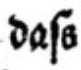
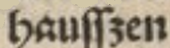
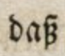

Level 1
In both black letter and antiqua texts, two forms of the lower case letter s can occur: the long-s (ſ, U+017F, LATIN SMALL LETTER LONG S) and the round s (s, U+0073, LATIN SMALL LETTER S). They are not distinguished in the transcription. They are recorded as round-s.
| Original | Explanation | transcribed text |
|---|---|---|
|  | A long-s followed by a s is in both cases transcribed as
round-s. |
dass |
|  | A long-s followed by a z is transcribed as round-s + z. | hausszen |
|  | The ligature long-s + z is transcribed as ß. | daß |